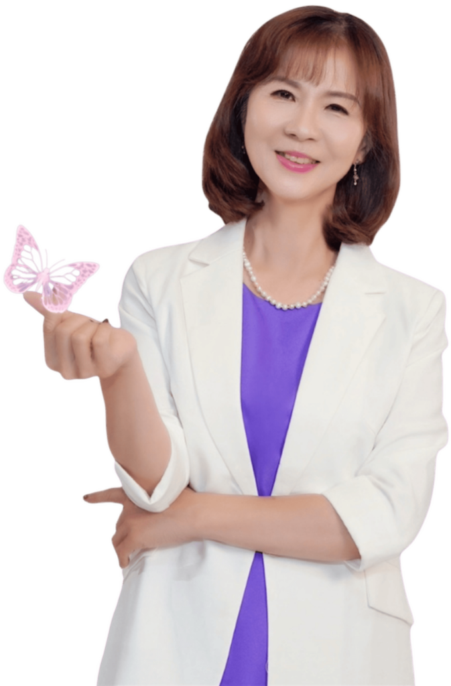

教育現場 34 年
特殊教育學校退休教師，長期在特教現場實踐與研究，把教學經驗一路累積成可以傳承的方法。
專注教育現場 34 年，退休後持續沈浸式學習成長。
我陪伴 45～65 歲的老師內在成長、珍愛自己；
退休後找回人生新價值，價值最大化服務更多人。
楊在珍 Esther

About Esther
「嗨！親愛的老師～你是否也曾以為退休就沒有價值？
其實，每天的你，都在默默累積寶藏！
一起來挖掘你的寶藏唷！」
楊在珍（Esther），對外大家喚她「幸福導師 Esther」。她把 34 年的專業投注在教育現場，是特教學校的退休教師；擁有學前、國小、國中、成人四個階段「魏氏智力測驗」心評老師資格，長年在最需要耐心與方法的教學現場工作。
退休之後，她沒有離開教育，而是持續沈浸式學習成長，擔任佳興成長營核心顧問，透過直播、線上 NAC 諮詢，陪伴更多教師——內在成長、珍愛自己、活出美好，擁抱樂齡心生活。
特殊教育學校退休教師，長期在特教現場實踐與研究，把教學經驗一路累積成可以傳承的方法。
Brand Belief
幸福導師 Esther ・ 楊在珍
The Journey
從教室裡的第一天，到 2028 年的那個數字——這條線，是一位老師把自己的一輩子，慢慢整理成別人也能走的路。
特殊教育學校教師生涯。34 年裡累積的不只是年資，而是一整套面對孩子、面對家長、面對自己的方法。
教學現場共同創作，未出版。第一次把現場的疑問，寫成一份研究。
〈運用班刊增進啟智學校小一學生家長參與之行動研究〉，揚智出版。
揚智出版發表於臺灣師範大學。讓不能開口的孩子，也能被聽見。
臺灣師範大學碩士論文，未出版。教了那麼多年，仍然把自己放回學生的位置。
退休後持續沈浸式學習成長，創辦信望愛全方位幸福學苑，擔任佳興成長營核心顧問，透過直播與線上 NAC 諮詢陪伴更多教師。
人生新價值線上課程＋書，2025 年預售。她把自己走過的路，整理成一套可以帶著走的地圖。
線上課程＋書Mission 2028
2028
陪伴 1000 位退休教師
完成自己的線上課程
「退休後人生使命：2028 年 陪伴 1000 名退休教師 知識創業～完成自己線上課程」
What She Does
在 BNI 大台南南區真鑽分會，她的專業類別是「知識變現」——把個人知識上架成培訓課程／線上課程。而在她眼中，每一位老師手上都已經有材料了，缺的只是把它取出來的順序。
陪你把 20、30 年的教學經驗，一項一項盤點出來：你最會的是什麼、幫過誰、解決過什麼問題。先看見自己的價值，才有後面的事。
「其實，每天的你，都在默默累積寶藏！」
她在商會中的專業類別，就是把個人知識上架成培訓課程與線上課程。從「我好像會一些東西」，走到「我有一堂可以交付的課」。
價值最大化，服務更多人。
這是她 2028 年使命的核心：陪伴退休教師知識創業，一路走到自己的線上課程真的完成、真的上線，而不是停在一份沒動的計畫。
2028 年，陪伴 1000 名退休教師。
透過直播與線上 NAC 諮詢，陪伴 45～65 歲的教師內在成長、珍愛自己，退休後找回人生新價值，發揮強大的使命感。
活出精彩豐盛的人生。
Live & Community
TikTok 直播間是她固定和老師們見面的地方。平日的早上八點、假日的早上七點，一天就從這裡開始。也歡迎到 LINE 社群「信望愛．知識創業幸福學苑」，和一群同樣在整理自己寶藏的老師一起走。
＊ 遇進修日時間會另行調整，實際時間以直播間公告為準。
Let's Begin
如果你也是一位快要退休、或已經退休的老師，歡迎加入在珍老師的 LINE 官方帳號。從內在成長開始，一步一步走到自己的線上課程。
@306psils